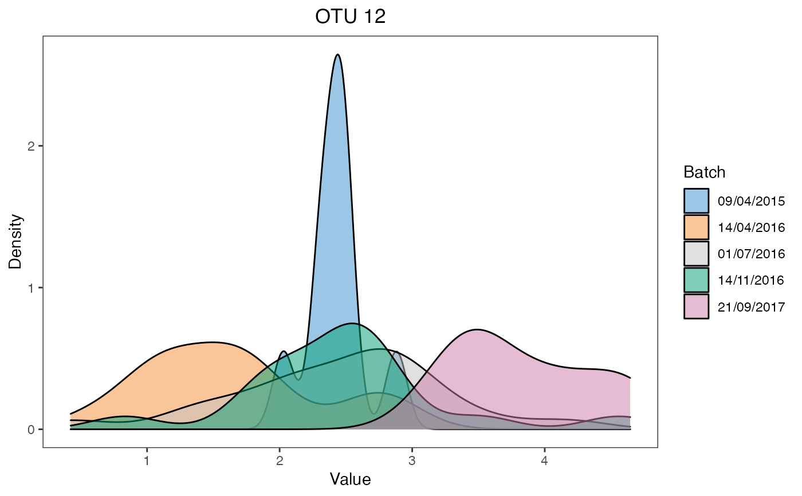
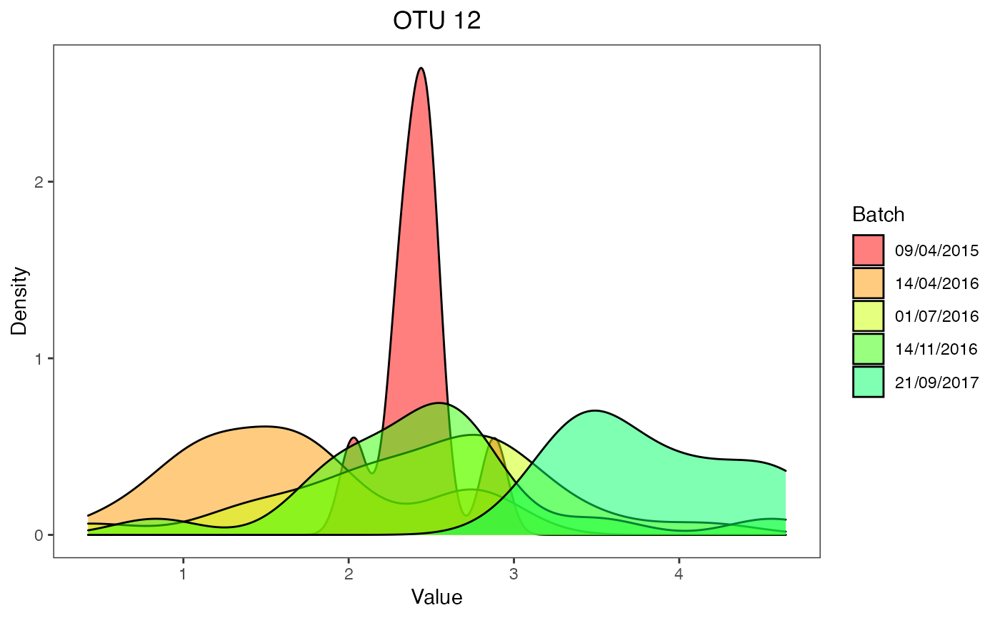

density_plot.RdThis function draws an overlap of multiple density plots for each batch.
density_plot(
df,
title = NULL,
batch.legend.title = "Batch",
xlab = "Value",
color.set = NULL,
title.hjust = 0.5
)A data frame used to draw the density plots.
Character, the plot title.
Character, the legend title of batches.
Character, x-axis title.
A vector of character, indicating the set of colors to use. The colors are represented by hexadecimal color code.
Numeric, horizontal justification of the plot title, in the range of \(0\) to \(1\).
None.
Scatter_Density, box_plot,
alignment_score and partVar_plot as the other
methods for batch effect detection and batch effect removal assessment.
# The first example
data('AD_data')
ad.clr <- AD_data$EgData$X.clr # centered log ratio transformed data
ad.batch = AD_data$EgData$Y.bat # batch information
ad.df <- data.frame(value = ad.clr[,1], batch = ad.batch)
density_plot(df = ad.df, title = 'OTU 12')

# The second example
colorlist <- rainbow(10)
density_plot(df = ad.df, title = 'OTU 12', color.set = colorlist)
